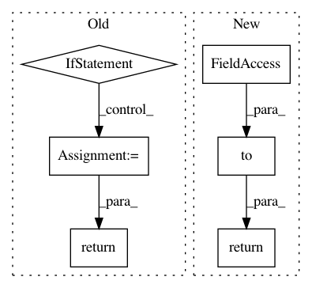

7be56405f2af0f700763249da3c368976582d792,examples/tgn.py,GraphAttentionEmbedding,forward,#GraphAttentionEmbedding#,55
Before Change
self.time_enc = time_enc
def forward(self, x, adj_t, t):
if adj_t.nnz() > 0:
_, _, value = adj_t.coo()
edge_t = value[:, 0].squeeze()
rel_t = edge_t - t
rel_t_enc = self.time_enc(rel_t.float())
edge_feat = value[:, 1:]
edge_attr = torch.cat([rel_t_enc, edge_feat], dim=1)
adj_t.set_value_(edge_attr, layout="coo")
x = self.conv((x, x[:adj_t.size(0)]), adj_t)
else:
x = self.conv.lin_skip(x)
return x
class LinkPredictor(torch.nn.Module):
def __init__(self, in_channels):
After Change
def forward(self, x, last_update, edge_index, t, msg):
rel_t = last_update[edge_index[0]] - t
rel_t_enc = self.time_enc(rel_t.to(x.dtype))
edge_attr = torch.cat([rel_t_enc, msg], dim=-1)
return self.conv(x, edge_index, edge_attr)
class LinkPredictor(torch.nn.Module):
def __init__(self, in_channels):
In pattern: SUPERPATTERN
Frequency: 3
Non-data size: 6
Instances
Project Name: rusty1s/pytorch_geometric
Commit Name: 7be56405f2af0f700763249da3c368976582d792
Time: 2020-12-07
Author: matthias.fey@tu-dortmund.de
File Name: examples/tgn.py
Class Name: GraphAttentionEmbedding
Method Name: forward
Project Name: PacktPublishing/Deep-Reinforcement-Learning-Hands-On
Commit Name: 373ae159f7ae1cabaf87228d1ae0fb6acd1c6363
Time: 2018-04-29
Author: max.lapan@gmail.com
File Name: ch14/06_train_d4pg.py
Class Name:
Method Name: distr_projection
Project Name: PacktPublishing/Deep-Reinforcement-Learning-Hands-On
Commit Name: 84e2cf87e0fe23fe3432b74ab484b1b71cd729b3
Time: 2018-04-29
Author: max.lapan@gmail.com
File Name: ch18/lib/model.py
Class Name:
Method Name: state_lists_to_batch